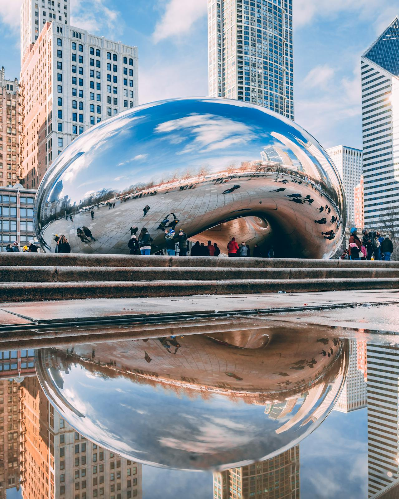
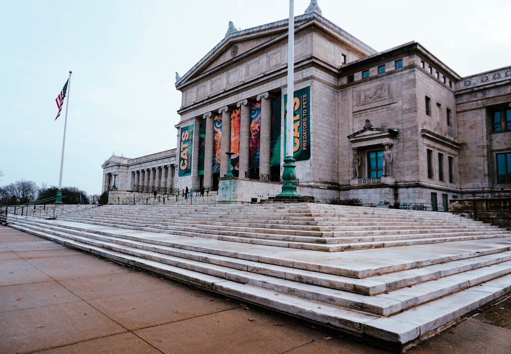

Millennium Park: O Centro de Arte, Arquitetura e Paisagismo de
Chicago:
O Millennium Park é um parque público premiado com
24,5 acres (cerca de 10 hectares) localizado no
centro de Chicago, no Grant Park, entre a orla do lago e o distrito
comercial central, The Loop. É uma atração turística extremamente
popular e um símbolo da revitalização urbana.
Destaques e Atrações Principais:
O parque é famoso por ser um "showplace" para arte de ponta,
arquitetura, design de paisagem e música. Algumas das peças e
estruturas mais notáveis incluem:
-
Cloud Gate (O Feijão):
-
Uma escultura icônica de aço inoxidável, comumente chamada
de "The Bean" (O Feijão) devido à sua forma.
-
Reflete o skyline de Chicago de forma
distorcida e é um dos locais mais fotografados da cidade.
- Simboliza a união entre arte e arquitetura.
-
Jay Pritzker Pavilion:
-
Um pavilhão de concha acústica (bandshell) projetado pelo
renomado arquiteto Frank Gehry.
-
É o palco para inúmeros
eventos e concertos gratuitos durante o
verão.
-
Apresenta um design distinto com faixas de aço inoxidável.
-
Crown Fountain:
-
Uma obra de arte interativa e uma fonte projetada por
Jaume Plensa.
-
Consiste em duas torres de vidro que exibem vídeos do rosto
de cidadãos de Chicago, de cujas bocas parece sair água em
alguns momentos, criando um efeito de cascata ou chafariz.
-
É um espaço popular para crianças (e adultos) brincarem no
verão.
-
Lurie Garden:
-
Um jardim de 5 acres que oferece um ambiente natural e
tranquilo dentro do ambiente urbano.
-
Apresenta uma mistura de plantas perenes e gramíneas,
seguindo princípios de design ecológico e paisagismo.
Inovação e História
O Millennium Park é considerado um dos
maiores ou o maior projeto intensivo de telhado verde do mundo.
O parque foi construído sobre:
-
Dois estacionamentos de vários níveis (com capacidade para 4.000
carros).
- Uma linha de trem de passageiros (commuter rail line).
- Um salão de ópera.
O parque foi inaugurado em 16 de julho de 2004,
transformando uma antiga "terra industrial" em um espaço público
dinâmico e sofisticado, tornando-se um presente para os habitantes
de Chicago e para o mundo. O seu objetivo era criar um espaço de
liberdade onde todos pudessem se conectar com a arte, a natureza e
uns com os outros.
The Art Institute of Chicago: Uma Instituição de Arte de Classe
Mundial:
O Art Institute of Chicago é um dos
museus de arte mais antigos e maiores dos Estados Unidos
e uma atração cultural de destaque em Chicago. É amplamente
reconhecido pela sua coleção enciclopédica, que abrange milhares de
anos e culturas, e pelo seu papel fundamental na preservação e
exibição de obras-primas.
A Coleção:
O acervo do museu é vasto, totalizando
mais de 300.000 obras de arte. Embora abranja
arte de todos os cantos do mundo e períodos, o Art Institute é
especialmente célebre por suas coleções em áreas chave:
-
Pintura Francesa do Século XIX: Possui uma das
coleções mais extensas e importantes de obras
Impressionistas e Pós-Impressionistas fora da
França.
- Obras icônicas incluem:
-
A Sunday on La Grande Jatte — 1884 (Uma Tarde de Domingo na
Ilha de Grande Jatte) de Georges Seurat.
-
The Bedroom (O Quarto) de Vincent van Gogh.
-
Paris Street; Rainy Day (Rua de Paris; Dia Chuvoso) de
Gustave Caillebotte.
-
Arte Americana: É o lar de uma das pinturas
americanas mais reconhecidas do mundo:
-
American Gothic (Gótico Americano) de
Grant Wood.
-
Arte Moderna e Contemporânea: Abriga obras
significativas, incluindo:
- Nighthawks (Falcões da Noite) de Edward Hopper.
-
The Old Guitarist (O Velho Guitarrista) de
Pablo Picasso.
-
Obras de Henri Matisse,
Georgia O’Keeffe, e muitos outros.
- Outras Coleções Notáveis:
- Pintura e Escultura do Século XX.
- Artes Asiáticas (com mais de 12.000 peças).
- Fotografia, Desenhos e Gravuras.
-
Arquitetura e Design (abrigadas na Biblioteca Burnham).
Arquitetura e História
-
Fundação: O museu tem as suas raízes na Chicago
Academy of Design, estabelecida em 1866, e adotou o seu nome
atual, The Art Institute of Chicago, em 1882.
-
Localização: A sua localização atual, na South
Michigan Avenue, junto ao Grant Park e ao Millennium Park, é
marcada por sua impressionante fachada e as famosas estátuas de
leões de bronze na entrada principal.
-
Ala Moderna (Modern Wing): Em maio de 2009, o
museu inaugurou uma grande expansão, a Ala Moderna, projetada
pelo arquiteto italiano Renzo Piano. Esta ala
de 24.526 metros quadrados inclui uma vasta galeria de arte
moderna e contemporânea, um terraço ao ar livre e uma passarela
que conecta o museu diretamente ao vizinho Millennium Park.
Estrutura Educacional
O Art Institute não é apenas um museu, mas também uma escola de arte
de prestígio, a
School of the Art Institute of Chicago (SAIC)], o
que reforça o seu papel como um centro para a criação e estudo da
arte.
Ele também abriga duas bibliotecas importantes, a
Ryerson Library (para livros de arte) e a
Burnham Library (para acervos de arquitetura), que
foram fundidas em 1957.

Field Museum de História Natural:
Uma Jornada Pela História da Terra e da Humanidade O
Field Museum de História Natural (Field Museum of
Natural History), localizado em Chicago,
Illinois, EUA, é um dos
maiores e mais importantes museus de história natural do mundo.
Inaugurado em 1893, como resultado da Exposição
Universal (World's Columbian Exposition), o museu foi posteriormente
nomeado em homenagem ao seu principal benfeitor, Marshall Field.
Desde 1921, ocupa seu edifício atual no Grant Park,
integrando o "Museum Campus" de Chicago, juntamente com o Aquário
Shedd e o Planetário Adler.
O que o torna especial?
-
Acervo Extenso: O museu abriga um acervo
impressionante de
quase 40 milhões de artefatos e espécimes
biológicos e geológicos, cobrindo áreas como antropologia,
botânica, geologia e zoologia.
-
Pesquisa e Educação: Além das exposições, o
Field Museum é uma
instituição de pesquisa científica ativa, com
programas educacionais e coleções científicas acessíveis a
pesquisadores de todo o mundo.
Destaques e Exposições Imperdíveis
O Field Museum é famoso por suas exposições que contam a história da
humanidade e da vida na Terra. Alguns dos pontos mais procurados
incluem:
-
SUE, o T. rex: É o espécime mais famoso do
museu, o esqueleto mais completo e maior de um
Tiranossauro Rex já descoberto. Atualmente está
exibido em um local totalmente novo dentro do museu.
-
Máximo, o Titanossauro: Uma réplica
impressionante de um Titanossauro, o maior
dinossauro já descoberto, que recepciona os visitantes no salão
principal (Stanley Field Hall).
-
Halls do Planeta em Evolução Griffin (Griffin Halls of
Evolving Planet):
Uma exposição que explora os
4,5 bilhões de anos da história da Terra e a evolução da vida , incluindo mais de uma dezena das maiores criaturas no Hall
dos Dinossauros.
-
Dentro do Egito Antigo (Inside Ancient Egypt):
Permite aos visitantes explorar a vida e a morte no Egito
Antigo, com réplicas de tumbas e uma coleção de mais de
50 múmias (humanas e de animais).
-
Halls de Pedras Preciosas e Jades: Exibe mais
de 600 pedras preciosas e centenas de joias, além de uma coleção
de mais de 450 exemplares de jade chinês.
-
Aventura Abaixo da Terra (Underground Adventure):
Uma exposição que exige um ingresso especial, onde você é
"encolhido" ao tamanho de um inseto para aprender sobre a
ciência do solo de uma nova perspectiva.
Informações Práticas
-
Localização: 1400 S Lake Shore Dr, Chicago, IL
60605, EUA. (Parte do Museum Campus).
-
Horário de Funcionamento: Geralmente abre todos
os dias, das 9h às 17h.
-
Ingressos: Oferece diferentes tipos de
ingressos (Entrada Geral, Discovery, All-Access) e está incluído
em pacotes de ingressos como o CityPASS, o que é uma excelente
forma de economizar na visita a várias atrações de Chicago.
O Field Museum é uma experiência rica e educativa, ideal para todas
as idades, que oferece uma visão abrangente da natureza e da
história cultural humana.